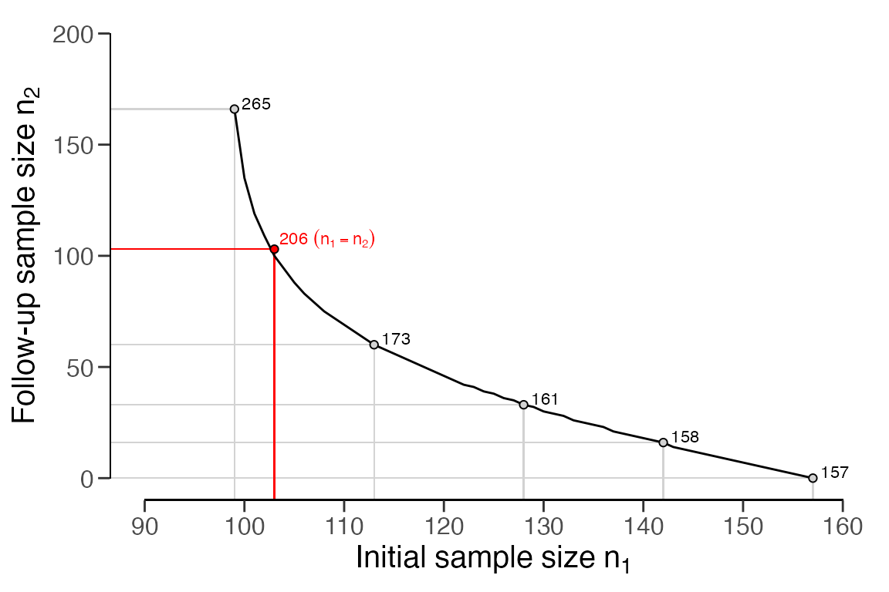

Planning statistical audit samples
Koen Derks
2023-12-07
Source:vignettes/sample-planning.Rmd
sample-planning.RmdIntroduction
Welcome to the ‘Planning statistical audit samples’ vignette of the
jfa package. This page illustrates how to use the
planning() function in the package to calculate a minimum
sample size for audit sampling.

Required information
First, planning a minimum sample requires knowledge of the conditions that lead to acceptance or rejection of the population (i.e., the sampling objectives). Typically, sampling objectives can be classified into one or both of the following:
- Hypothesis testing: The goal of the sample is to obtain evidence for or against the claim that the misstatement in the population is lower than a given value (i.e., the performance materiality).
- Estimation: The goal of the sample is to obtain an accurate estimate of the misstatement in the population (with a minimum precision).
Second, it is advised to specify the expected (or tolerable) misstatements in the sample. The expected misstatements are the misstatements that you allow in the sample, while still retaining the desired amount of assurance about the population. It is strongly recommended to set the value for the expected misstatements in the sample conservatively to minimize the chance of the observed misstatements in the sample exceeding the expected misstatements, which would imply that insufficient work has been done in the end.
Next to determining the sampling objective(s) and the expected
misstatements, it is also important to determine the statistical
distribution linking the sample outcomes to the population misstatement.
This distribution is called the likelihood (i.e., poisson,
binomial, orhypergeometric). All three
aforementioned likelihoods are commonly used in an audit sampling
context, however, poisson is the default likelihood in
jfa because it is the most conservative of the
three.
Classial approach
To illustrate how the planning() function can be used to
calculate a minimum sample size for audit sampling, we will first
demonstrate how to set up a sample with the purpose of hypothesis
testing and subsequently show how to plan a sample with the purpose of
estimation. In both cases, we will tolerate zero misstatements in the
sample.
Hypothesis testing
First, let’s take a look at how you can use the
planning() function to calculate the minimum sample size
for testing the hypothesis that the misstatement in the population is
lower than the performance materiality. In this example the performance
materiality is set to three percent of the total population value,
meaning that the population cannot contain more than three percent
misstatement.
Sampling objective: Calculate a minimum sample size such that, when no misstatements are found in the sample, there is a 95 percent chance that the misstatement in the population is lower than three percent of the population value.
Single-stage sampling plans
In a single-stage sampling plan, the auditor aims to implement the sampling objective in its simplest form. Specifically, they aim to minimize the risk of the observed misstatements in the sample \(k\) originating from a population that is materially misstated (i.e., a population in which the misstatement rate is equal to, or higher than, \(\theta_{max}\)). This risk should be less than the sampling risk \(\alpha\).
\[\begin{equation} p(k \leq 0 | n, \theta_{max}) \leq \alpha \end{equation}\]
The minimum sample size for this sampling objective can be computed
by specifying the materiality argument in the
planning() function. Following this, a summary of the
statistical results can be obtained using the summary()
function. The results indicates that, assuming \(k\) = 0 tolerable misstatements, the
minimum sample size is \(n\) = 99 items
or units. The auditor can accommodate misstatements (for instance,
tolerate \(k\) = 1 misstatement) in the
sample by providing an integer value to the expected argument of the
function (e.g., expected = 1).
##
## Classical Audit Sample Planning Summary
##
## Options:
## Confidence level: 0.95
## Materiality: 0.03
## Hypotheses: H₀: Θ >= 0.03 vs. H₁: Θ < 0.03
## Expected: 0
## Likelihood: binomial
##
## Results:
## Minimum sample size: 99
## Tolerable errors: 0
## Expected most likely error: 0
## Expected upper bound: 0.029807
## Expected precision: 0.029807
## Expected p-value: 0.049023To confirm this calculation, we must verify that the probability of detecting \(k\) = 0 misstatements (or less) in \(n\) = 99 samples, given a misstatement rate of \(\theta_{max}\) = 0.03, is less than the acceptable sampling risk of \(\alpha\) = 0.05.
pbinom(q = 0, size = 99, prob = 0.03) < 0.05## [1] TRUEMulti-stage sampling plans
A multi-stage sampling plan, as opposed to a single-stage one, allows for an intermediate evaluation of the sample. In the first stage of a multi-stage sampling plan, the auditor selects an initial sample of size \(n_1\). If this sample contains a tolerable number of misstatements (usually 0), the auditor can approve the population. However, if the sample contains more misstatements than the tolerable number, the auditor cannot approve the population. In such a scenario, the initial sample is supplemented with a second sample of \(n_2\) items. If this additional sample contains a tolerable number of misstatements, the population can still be approved. If not, the population should either be rejected or a third sample of \(n_3\) items should be added.
In the classical (i.e., frequentist) methodology, multi-stage sampling plans can be formulated by decomposing the sampling risk into multiple components. For example, if the auditor initially plans for \(k\) = 0 misstatements but considers extending the sample if \(k\) = 1 misstatement is discovered, then the probability of erroneously rejecting the hypothesis of material misstatement comprises:
- \(p(k \leq 0 | n_1, \theta_{max})\): The probability of finding \(k\) = 0 misstatements in the first sample of \(n_1\) items; plus
- \(p(k = 1 | n_1, \theta_{max})\): The probability of finding \(k\) = 1 misstatement in the first sample of \(n_1\) items; multiplied by
- \(p(k \leq 0 | n_2, \theta_{max})\): The probability finding \(k\) = 0 misstatements in the second sample of \(n_2\) items.
The sum of these probabilities should be less than or equal to the sampling risk \(\alpha\).
\[\begin{equation} p(k \leq 0 | n_1, \theta_{max}) + p(k = 1 | n_1, \theta_{max}) \cdot p(k \leq 0 | n_2, \theta_{max}) \leq \alpha \end{equation}\]
To constrain the problem, jfa sets the number of samples in the extension equal to the initial sample size (\(n_1\) = \(n_2\) = \(n_s\)). This implies that the sample size per stage in this two-stage sampling plan is the smallest integer \(n_s\) that fulfills the following condition.
\[\begin{equation} p(k \leq 0 | n_s, \theta_{max}) + p(k = 1 | n_s, \theta_{max}) \cdot p(k \leq 0 | n_s, \theta_{max}) \leq \alpha \end{equation}\]
In jfa, multi-stage sampling plans can be calculated
by supplying an integer vector of misstatements, after which each stage
should be extended, to the planning() function via its
expected argument. For example, the following code
calculates the required sample size if the auditor initially plans for
\(k\) = 0 misstatements but considers
extending the sample if \(k\) = 1
misstatement is discovered. The required sample size per stage is \(n_s\) = 103, resulting in a total sample
size (if both stages are necessary) of \(n\) = 206.
multiplan <- planning(materiality = 0.03, likelihood = "binomial", expected = c(1, 0))
print(multiplan)##
## Classical Audit Sample Planning
##
## minimum sample size = 206 (103 per stage)
## sample size obtained in 102 iterations via method 'binomial' + 'sequential'To confirm this calculation, we need to ensure that that the probability of incorrectly rejecting the null hypothesis of material misstatement, under the binomial distribution, is less than the sampling risk \(\alpha\) = 0.05.
p_k0_n1 <- pbinom(q = 0, size = 103, prob = 0.03)
p_k1_n1 <- dbinom(x = 1, size = 103, prob = 0.03)
p_k0_n2 <- pbinom(q = 0, size = 103, prob = 0.03)
p_k0_n1 + p_k1_n1 * p_k0_n2 < 0.05## [1] TRUEThe minimum sample size per stage, \(n_s\) = 103, is only slighly larger than the minimum sample size for the first stage if the auditor opts for a single-stage sampling plan expecting \(k\) = 0, which is \(n\) = 99.
planning(materiality = 0.03, likelihood = "binomial", expected = 0)##
## Classical Audit Sample Planning
##
## minimum sample size = 99
## sample size obtained in 100 iterations via method 'binomial'However, the total sample size, \(n\) = 206, is considerably larger than the minimum sample size if the auditor opts for a single-stage sampling plan expecting \(k\) = 1, which is \(n\) = 157. This illustrates the cost of allowing a sample size extension in the classical approach.
planning(materiality = 0.03, likelihood = "binomial", expected = 1)##
## Classical Audit Sample Planning
##
## minimum sample size = 157
## sample size obtained in 156 iterations via method 'binomial'Note that the sample size per stage \(n_s\) = 103 is based on \(n_1\) = \(n_2\) but that this does not have to be the
case. To visualize the balance between the initial sample and the
follow-up sample, we can use the plot() function. The total
sample size is specified in text in the figure.
plot(multiplan)
As another example, consider a three-stage sampling plan where the auditor plans to extend the sample after finding \(k\) = 1 misstatement in the first stage, extend further if they find \(k\) = 1 misstatement in the second stage, and still be able to approve the population if they find \(k\) = 0 misstatements in the third stage. The required sample size in each of the three stages is \(n_s\) = 208.
##
## Classical Audit Sample Planning
##
## minimum sample size = 624 (208 per stage)
## sample size obtained in 204 iterations via method 'binomial' + 'sequential'This can be confirmed by ensuring that the probability of incorrectly rejecting the null hypothesis of the population containing three percent misstatement is below the acceptable sampling risk \(\alpha\) = 0.05.
p_k2_n1 <- pbinom(q = 2, size = 208, prob = 0.03)
p_k3_n1 <- dbinom(x = 3, size = 208, prob = 0.03)
p_k0_n2 <- pbinom(q = 0, size = 208, prob = 0.03)
p_k1_n2 <- dbinom(x = 1, size = 208, prob = 0.03)
p_k0_n3 <- pbinom(q = 0, size = 208, prob = 0.03)
p_k2_n1 + p_k3_n1 * p_k0_n2 + p_k3_n1 * p_k1_n2 * p_k0_n3 < 0.05## [1] TRUEUnlike the previous example, the minimum sample size per stage, \(n_s\) = 208, is not larger than the minimum sample size for the first stage if the auditor decides to use a single-stage sampling plan expecting \(k\) = 2 misstatements, which is also \(n\) = 208.
planning(materiality = 0.03, likelihood = "binomial", expected = 2)##
## Classical Audit Sample Planning
##
## minimum sample size = 208
## sample size obtained in 206 iterations via method 'binomial'Estimation
Next, let’s explore how to use the planning() function
to compute the minimum sample size needed to estimate the misstatement
in the population with a certain minimum precision. Precision is defined
as the gap between the most likely misstatement and the upper limit on
the misstatement. For this example, the minimum precision is set to two
percent of the population value. Note that ‘minimum’ in this context
implies that the precision in the auditor’s inference should not exceed
two percent.
Sampling objective: Calculate a minimum sample size such that, when zero misstatements are found in the sample, there is a 95 percent chance that the misstatement in the population is at most 2 percent above the most likely misstatement.
You can calculate the minimum sample size for this sampling objective
by specifying the min.precision argument in the
planning() function, as shown in the command below. The
result indicates that, assuming \(k\) =
0 tolerable misstatements in the sample, the minimum sample size is
\(n\) = 149 items or units.
planning(min.precision = 0.02, likelihood = "binomial")##
## Classical Audit Sample Planning
##
## minimum sample size = 149
## sample size obtained in 150 iterations via method 'binomial'Bayesian approach
To carry out Bayesian planning, you need to provide an input for the
prior argument in the planning() function. If
you set prior = TRUE, the function will perform Bayesian
planning using a default
prior that is conjugate to the specified likelihood.
For instance, the command below employs a default gamma(\(\alpha\) = 1, \(\beta\) = 1) prior distribution to plan the
sample.
##
## Bayesian Audit Sample Planning Summary
##
## Options:
## Confidence level: 0.95
## Materiality: 0.03
## Hypotheses: H₀: Θ > 0.03 vs. H₁: Θ < 0.03
## Expected: 0
## Likelihood: poisson
## Prior distribution: gamma(α = 1, β = 1)
##
## Results:
## Minimum sample size: 99
## Tolerable errors: 0
## Posterior distribution: gamma(α = 1, β = 100)
## Expected most likely error: 0
## Expected upper bound: 0.029957
## Expected precision: 0.029957
## Expected BF₁₀: 626.69You can compare the prior distribution to the expected posterior
distribution using the plot() function. The expected
posterior distribution is the posterior distribution you would get if
the planned sample containing the expected misstatements were actually
observed.
plot(plan)The Bayesian approach to audit sampling uses the posterior distribution from the observed sample as a prior distribution for a potential second sample in an iterative manner. For this reason, this approach does not affect the sampling risk based on the number of tests (Rouder, 2014). Hence, in the Bayesian framework, it is entirely appropriate to start sampling until there is enough evidence to make a decision (Edwards et al., 1963). This means that if you find \(k\) = 1 misstatement in the initial \(n_1\) = 99 samples, calculating the sample size extension simply involves computing the single-stage sample size under the expectation of \(k\) = 1 tolerable misstatement. The total required sample size then becomes \(n\) = 157, and the sample size extension therefore amounts to \(n_2\) = 158 - 99 = 59 items.
planning(materiality = 0.03, expected = 1, prior = TRUE)##
## Bayesian Audit Sample Planning
##
## minimum sample size = 158
## sample size obtained in 157 iterations via method 'poisson' + 'prior'The prior argument can also accept an object created by
the auditPrior() function. If planning()
receives a prior for which a conjugate likelihood is available, the
planning will inherit the likelihood from the prior. For example, the
command below uses a custom beta(\(\alpha\) = 1, \(\beta\) = 10) prior distribution to plan
the sample using the binomial likelihood. The minimum sample size in
this case is \(n\) = 89.
prior <- auditPrior(method = "param", likelihood = "binomial", alpha = 1, beta = 10)
planning(materiality = 0.03, expected = 0, conf.level = 0.95, prior = prior)##
## Bayesian Audit Sample Planning
##
## minimum sample size = 89
## sample size obtained in 90 iterations via method 'binomial' + 'prior'However, if there is no conjugate likelihood available for the
specified prior distribution, you need to manually specify the
likelihood argument in the planning()
function. For instance, the command below uses a Normal(\(\mu\) = 0, \(\sigma\) = 0.1) prior in combination with
the binomial likelihood to plan the sample. The minimum sample size in
this case is \(n\) = 96 items.
prior <- auditPrior(method = "param", likelihood = "normal", alpha = 0, beta = 0.1)
planning(
materiality = 0.03, expected = 0, conf.level = 0.95,
likelihood = "binomial", prior = prior
)##
## Bayesian Audit Sample Planning
##
## minimum sample size = 96
## sample size obtained in 97 iterations via method 'binomial' + 'prior'